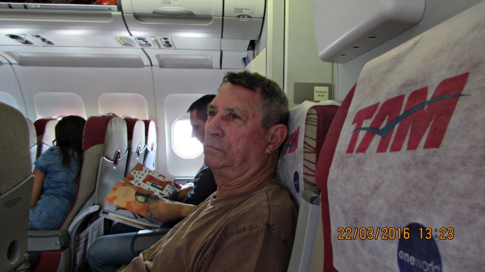
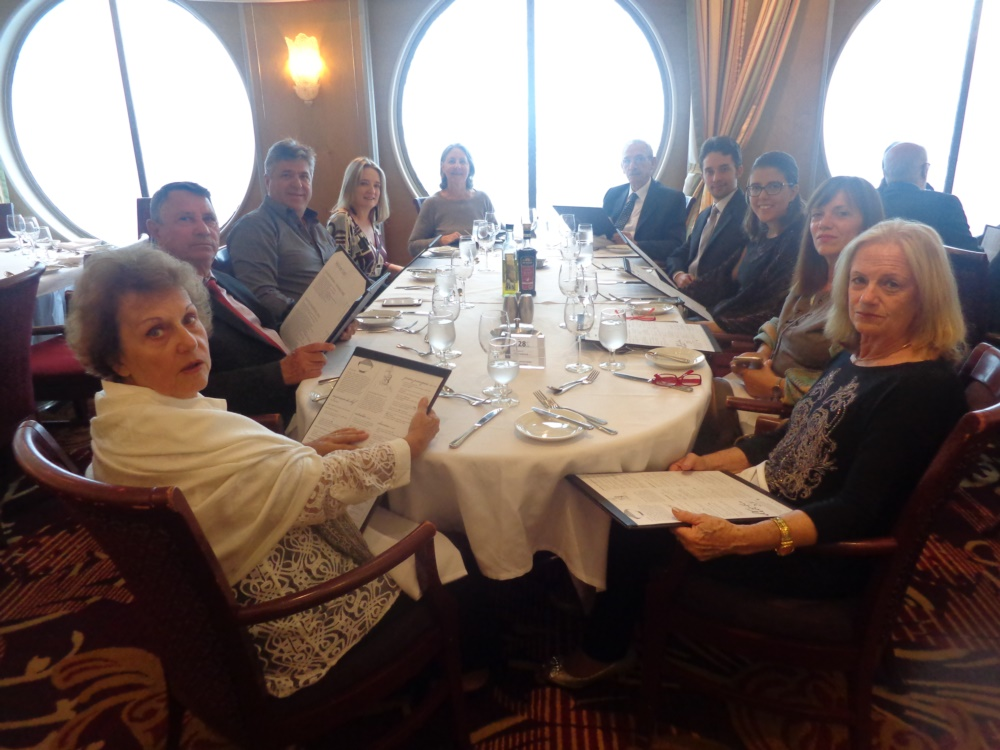

Resumo da Viagem
Iniciando por Santiago, Viña del Mar e Valparaíso, seguimos por via marítima no Rhapsody of the Seas, navegando pelos fiordes chilenos, Geleira El Brujo, Punta Arenas, Geleira Itália, Estreito de Magalhães, Ushuaia, Cabo Horn, Puerto Madryn, Montevidéu e Buenos Aires, finalizando em Santos – Brasil.
Alguns Momentos da Viagem



